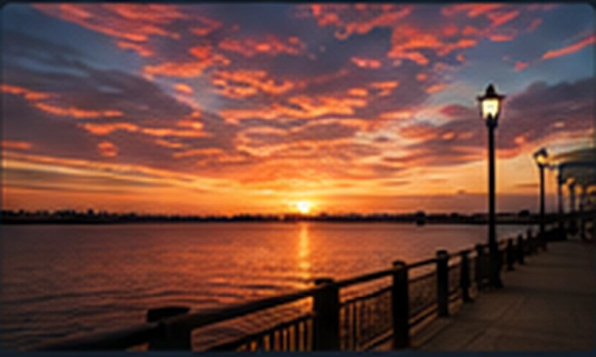
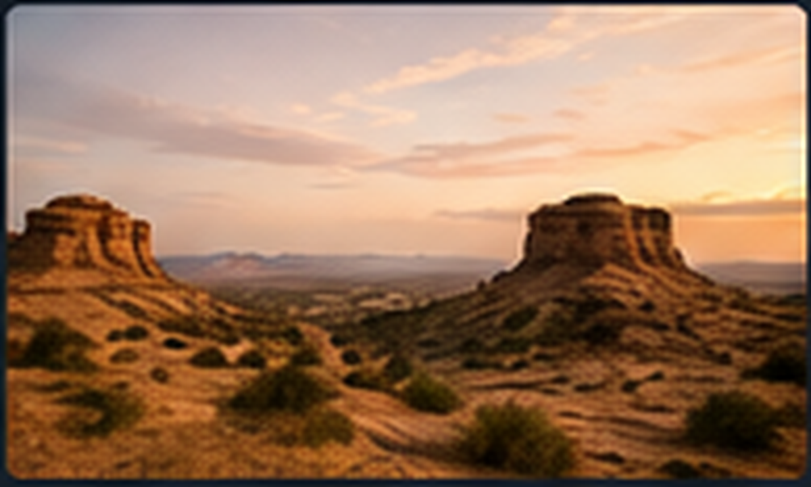

METADATA LAB
Fictional educational evidence

harbor_sunset.jpg
Created
June 12, 7:42 PM
Time zone
UTC-7
Camera
Pixel 8
Software
Snapseed
GPS
Removed
Owner
Alex Carter
Weekend Notes
PDF
weekend_notes.pdf
Author
Alex Carter
Created
June 12, 9:14 AM
Time zone
UTC-7
Subject
Waterfront event research
Pages
2

desert_banner.png
Original GPS
Desert Springs
Created
September 18, 2024
Source
Stock-photo site
Owner
Not Alex Carter
Downloaded
June 3, 2026